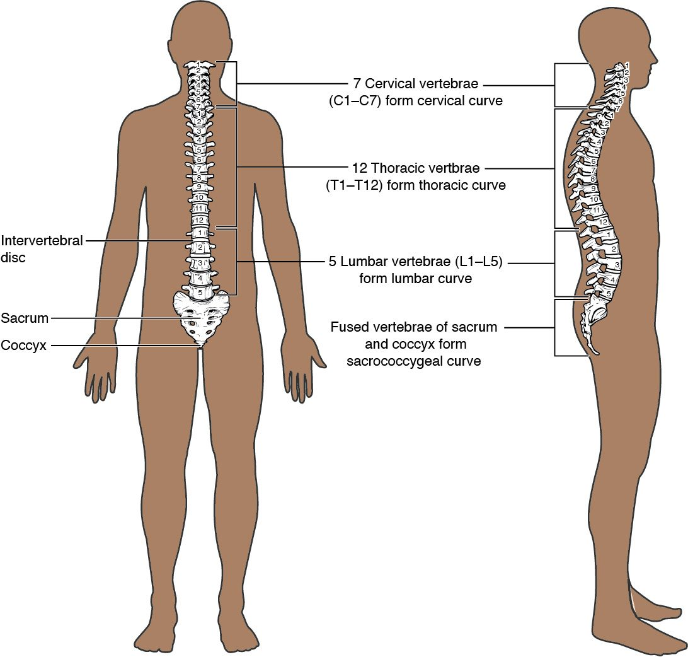
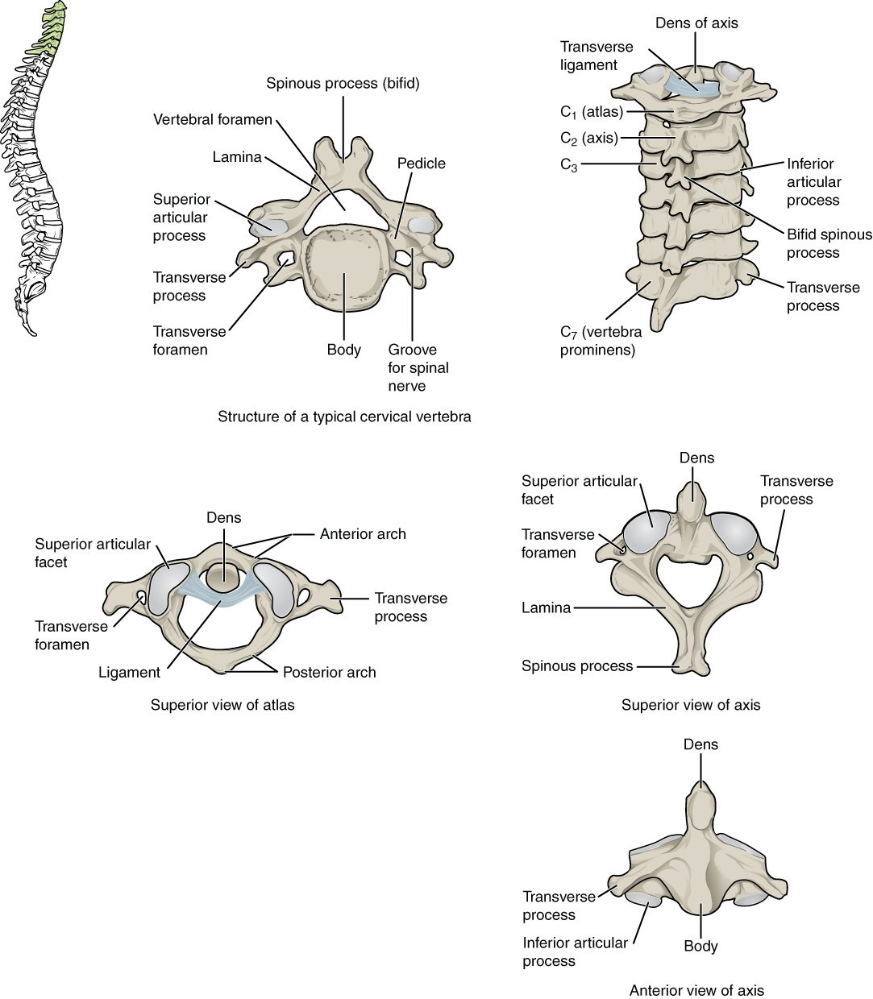
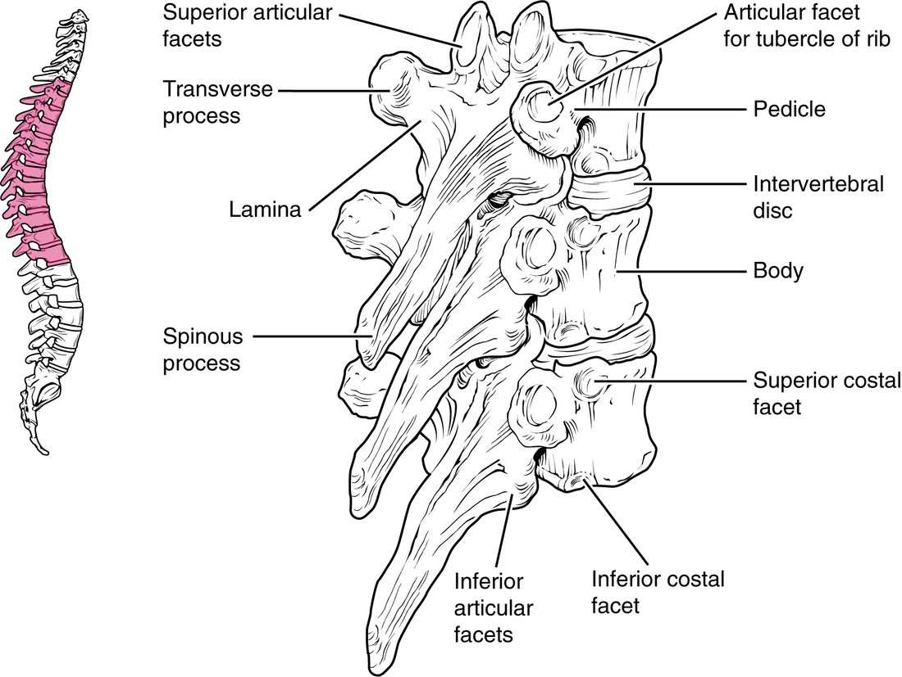
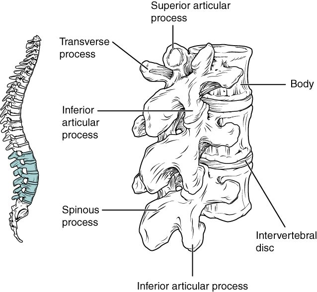
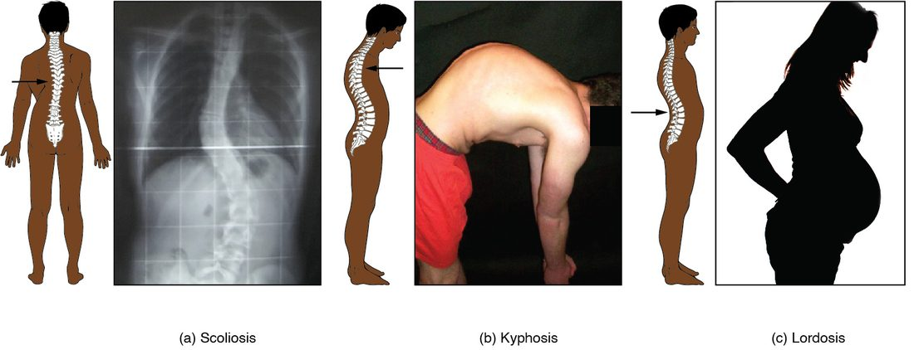
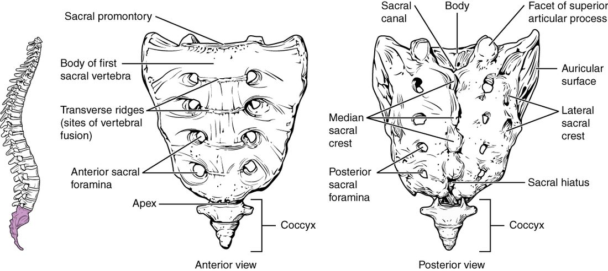
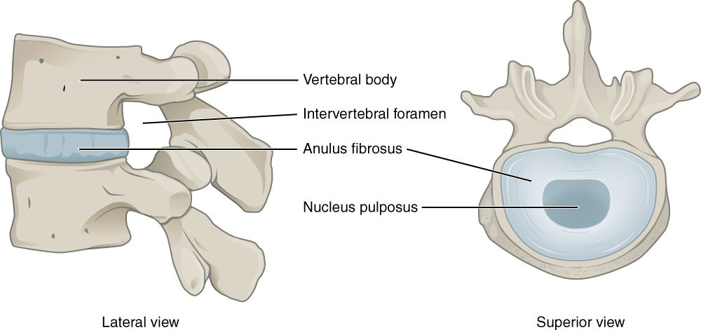
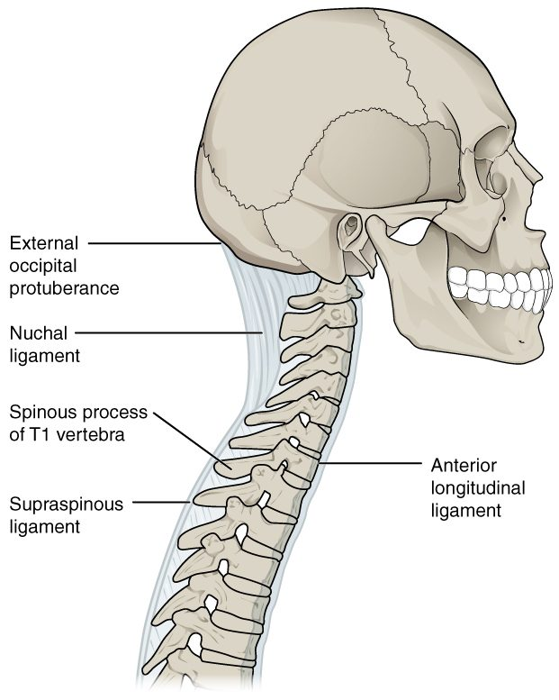

Run your fingers down the middle of your back and you feel a row of bumps. Each bump is the back tip of one vertebra, a bone in the stack that makes up your backbone. This page covers the vertebral column regions and anatomy: how the column is divided, the parts every vertebra shares, how the neck, chest and lower-back vertebrae differ, the special first two vertebrae, the curves of the spine, the pads between the vertebrae and the ligaments that tie the column together.
Regions of the vertebral column
The vertebral column (vertebra = joint, from vertere = to turn) is the flexible stack of bones that runs from the base of the skull to the pelvis. It is part of the axial skeleton. It holds up the head and trunk, surrounds the spinal cord, and anchors the ribs and many muscles.
A child's column has 33 vertebrae. In the adult, some of them fuse, leaving 26 bones. They fall into five regions, named for the body regions they sit in (Figure 1). Clinicians name each vertebra by the first letter of its region and its number, counting down from the top.
- 7 cervical vertebrae (cervic- = neck), C1 to C7, in the neck.
- 12 thoracic vertebrae (thorac- = chest), T1 to T12, in the chest. Each one carries a pair of ribs.
- 5 lumbar vertebrae (lumb- = loin, lower back), L1 to L5, in the lower back.
- The sacrum (sacr- = sacred), one triangular bone formed when 5 sacral vertebrae fuse during the teens and twenties. It sits between the two hip bones.
- The coccyx (coccyx = cuckoo, for its beak shape), the tailbone, usually formed from 4 small fused vertebrae (3 to 5 in different people).
A memory aid for the counts of the three movable regions: breakfast at 7, lunch at 12, dinner at 5.

The parts of a vertebra
Vertebrae from different regions look different, but almost all share the same plan (Figure 2). Picture a signet ring lying flat: a thick, solid front joined to a thinner loop behind.
- The vertebral body is the thick, drum-shaped front part. It carries the weight of everything above it, so the bodies grow larger from the neck down to the lower back.
- The vertebral arch is the bony loop behind the body. Two short pedicles (pedicle = little foot) come straight back from the body, and two flat laminae (singular lamina; lamina = thin plate) angle in from the pedicles and meet in the midline.
- The vertebral foramen is the large hole enclosed by the body in front and the arch behind. Stacked one on another, the vertebral foramina form the vertebral canal, the tunnel that holds the spinal cord.
Seven processes stick out from the arch. Each is a site where muscles or ligaments anchor, or where one vertebra meets the next.
- One spinous process points backward from where the laminae meet. These are the bumps you feel down your back.
- Two transverse processes point out to the sides, where each pedicle meets its lamina.
- Two superior articular processes point up, and two inferior articular processes point down. Each carries a smooth facet. The inferior processes of one vertebra rest on the superior processes of the vertebra below, which guides how the pair can move.
Between each pair of vertebrae, on each side, the notch below one pedicle lines up with the notch above the next pedicle. Together they form an intervertebral foramen (inter- = between), the gap where a nerve leaves the spinal cord on its way out to the body.

How the regions differ
Each region's vertebrae are shaped by the loads and movements of that part of the body. The neck turns the head in every direction but carries little weight, so its vertebrae are small and light. The lower back carries the weight of the whole trunk, so its vertebrae are massive. The chest vertebrae hold the ribs. Compare the typical cervical vertebra (Figure 3), thoracic vertebrae (Figure 4) and lumbar vertebrae (Figure 5).
| Cervical (C1–C7) | Thoracic (T1–T12) | Lumbar (L1–L5) | |
|---|---|---|---|
| Body | Small, wider side to side | Medium, heart-shaped | Largest, thick and kidney-shaped |
| Vertebral foramen | Large and triangular | Small and round | Medium and triangular |
| Spinous process | Short, split in two at the tip (bifid) on C2 to C6 | Long, sloping steeply down over the vertebra below | Short, broad and blunt, pointing straight back |
| Transverse processes | Each has a transverse foramen | Each (T1 to T10) has a costal facet for a rib | Long and thin, with no foramen or facet |
| Facets on the body for ribs | None | Costal facets on each side | None |
| Main movement allowed | Nodding, turning and tilting the head | Some turning; the ribs limit bending | Bending forward and backward; little turning |
Cervical vertebrae
Every cervical vertebra has a small hole in each transverse process, the transverse foramen. Stacked, these holes form a channel on each side of the neck, and an artery runs up through it to the back of the brain, with small veins beside it. No other region has transverse foramina, so they are the quickest way to spot a neck vertebra. C7 has an extra-long spinous process that is not split. It is the bump you can feel most easily at the base of the back of your neck.

Thoracic vertebrae
Thoracic vertebrae are the ones that carry ribs, and they show it. Each has smooth pits called costal facets (cost- = rib) where the ribs meet the bone: on the sides of the body for the rib's end, and on the transverse processes of T1 to T10 for a second point of contact farther along the rib. You will meet the parts of the ribs in the next topic. The long spinous processes slope down and overlap like roof tiles.

Lumbar vertebrae
Lumbar vertebrae have the largest bodies of all, because they carry the most weight. Their spinous processes are short and blunt, shaped like a hatchet blade, and point straight back. The articular facets face each other from the sides, which lets the lower back bend forward and back but blocks most twisting.

The atlas and axis
The top two vertebrae are built for moving the head, and they look unlike any other (Figure 3).
- The atlas (C1) is named for the Greek giant who held up the heavens, because it holds up the skull. It is a ring of bone with no body and no spinous process, just a front arch and a back arch joined by thick side masses. The occipital condyles of the skull rest in two large, cupped facets on its top. When you nod "yes", the skull rocks on the atlas.
- The axis (C2) has a tooth-shaped peg called the dens (dens = tooth) that sticks up from its body into the front of the atlas's ring. A strong band of ligament across the ring holds the dens against the front arch. When you shake your head "no", the atlas and skull turn together around the dens as a pivot.
The dens sits right in front of the spinal cord at its top. A break through the base of the dens, or a torn band holding it, can let it shift backward into the cord, which is why neck injuries at this level are so dangerous.
Curvatures of the spine
Seen from the side, an adult's column is not straight. It has four curves that make a gentle S (Figure 1). Two terms describe their direction:
- Kyphosis (kyph- = hump): a curve that bows backward, convex toward the back.
- Lordosis (lord- = bent backward): a curve that bows forward, convex toward the front.
From the top down, the four are the cervical curve (bows forward), the thoracic curve (bows backward), the lumbar curve (bows forward) and the sacrococcygeal curve (bows backward).
Primary and secondary curves
A newborn's column has only one curve: it bows backward along its whole length, like the letter C, the shape of a fetus curled in the uterus. The other curves appear as the baby starts using its body.
- At about 3 to 4 months, the baby starts lifting its head. The muscles at the back of the neck pull on the cervical vertebrae, and the neck bows forward: the cervical curve.
- Around the first birthday, the child sits, stands and walks. Holding the trunk upright over the legs pulls the lower back forward: the lumbar curve.
- Over the following years, the discs and vertebral bodies in these regions grow slightly wedge-shaped, thicker in front, which makes the new curves permanent.
| Primary curves | Secondary curves | |
|---|---|---|
| Which curves | Thoracic and sacrococcygeal | Cervical and lumbar |
| Direction | Bow backward (kyphotic) | Bow forward (lordotic) |
| When they appear | Before birth; kept from the fetal C shape | After birth: cervical at about 3 to 4 months, lumbar at about 1 year |
| What produces them | The curled position of the fetus | Holding the head up, then sitting, standing and walking |
Abnormal curves
When a curve is exaggerated or bends the wrong way, it is abnormal (Figure 6).
- Scoliosis (scoli- = crooked) is a sideways bend, usually with the vertebrae twisted too. The most common kind has no known cause and appears during the growth spurt around puberty, and it more often worsens in girls.
- An exaggerated thoracic curve, a hunched upper back, is also called kyphosis. In older adults with osteoporosis, the front of weakened thoracic bodies can collapse into wedges, bending the upper back forward.
- An exaggerated lumbar curve, a swayback, is also called lordosis. Late pregnancy or a large belly pulls the center of weight forward, and leaning back to balance it deepens the lumbar curve.

The sacrum and coccyx
The sacrum is a wedge that sits between the two hip bones and passes the weight of the trunk to them (Figure 7). Its landmarks are:
- The sacral promontory (promontory = headland): the forward-jutting upper front edge of the first sacral body. It is used to measure the opening of the pelvis.
- The sacral foramina: four pairs of holes on the front and four on the back, where nerves pass out of the sacrum.
- The sacral canal: the lower continuation of the vertebral canal, running down inside the sacrum.
- The sacral hiatus (hiatus = gap): the opening at the lower end of the sacral canal, where the laminae of the last sacral vertebrae never fused. Clinicians can inject anesthetic into the canal through it.
The coccyx hangs below the sacrum. A hard fall onto your bottom can bruise or break it.

The intervertebral discs
From C2 down to the sacrum, a pad of fibrocartilage sits between each pair of vertebral bodies: an intervertebral disc. There is no disc between the skull and the atlas, or between the atlas and the axis. The discs make up about a quarter of the column's length. Each disc has two parts (Figure 8).
- The anulus fibrosus (anulus = ring, fibrosus = fibrous; also spelled annulus) is the tough outer wall: rings of fibrocartilage whose collagen fibers run at alternating angles, like the plies of a tire.
- The nucleus pulposus (nucleus = kernel, pulp- = soft, fleshy) is the soft, gel-like core. It is mostly water held by large water-binding molecules.
When you stand, the weight above squeezes the nucleus. It cannot be compressed, so it pushes outward on the anulus, and the anulus's tight fibers push back. That is how a disc spreads the load and cushions the bodies. The discs slowly lose water during the day under your weight, so you are about 1 to 2 cm shorter at night than in the morning. With age they lose water for good, which is part of why older adults lose height.

A herniated disc
With age and strain, the outer rings of the anulus can weaken and tear. Under heavy load, especially lifting while bent forward, the nucleus can push out through the tear. This is a herniated disc, often called a "slipped disc". The bulge usually goes backward and to one side, where the anulus is thinnest and no ligament covers it. There it presses on a nerve running down the canal toward its intervertebral foramen (in the lower back, usually the nerve that exits one level lower), causing pain, tingling or weakness in the area that nerve serves. Most herniations happen in the lower back, between L4 and L5 or between L5 and the sacrum, where the load is greatest. In adults the spinal cord ends at about L1 to L2, so the lower lumbar canal holds only nerves, and a herniation there presses on a nerve, not on the cord.
Ligaments of the vertebral column
Long ligaments of dense connective tissue tie the vertebrae together along the column's whole length (Figure 9 and Figure 10).
- The anterior longitudinal ligament runs down the front of the vertebral bodies and discs, from the skull to the sacrum. It is broad and strong, and it resists bending backward. A whiplash injury, when the head snaps back, can tear it.
- The posterior longitudinal ligament runs down the back of the bodies, inside the vertebral canal, in front of the spinal cord. It is narrow, and it resists bending forward.
- The ligamentum flavum (flav- = yellow; plural ligamenta flava) joins the laminae of neighboring vertebrae. It is yellow because it is made mostly of elastic fibers, and it stretches when you bend forward and helps pull you back upright.
- The supraspinous ligament (supra- = above) joins the tips of the spinous processes from C7 down to the sacrum.
- The nuchal ligament (nucha = nape of the neck) is the neck's version of the supraspinous ligament: a thick sheet running from C7 up to the back of the skull. It helps hold the head up and anchors muscles of the neck.

Summary
The vertebral column has 7 cervical, 12 thoracic and 5 lumbar vertebrae, plus the sacrum (5 fused) and the coccyx (usually 4 fused). A typical vertebra has a weight-bearing body and a vertebral arch of pedicles and laminae around the vertebral foramen, with one spinous, two transverse and four articular processes; nerves leave through the intervertebral foramina. Cervical vertebrae have transverse foramina, thoracic vertebrae have costal facets for the ribs, and lumbar vertebrae have the largest bodies. The atlas has no body and carries the skull; the axis has the dens, around which the atlas turns. The thoracic and sacrococcygeal curves are primary; the cervical and lumbar curves are secondary and form as the infant lifts its head and walks. Scoliosis, kyphosis and lordosis are abnormal curves. Each intervertebral disc is an anulus fibrosus around a nucleus pulposus; a tear lets the nucleus herniate onto a nerve. The anterior and posterior longitudinal ligaments, ligamentum flavum, supraspinous and nuchal ligaments bind the column.